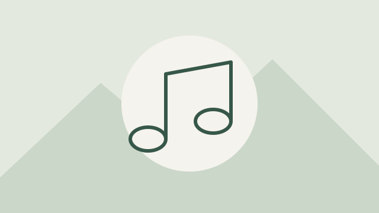

Winter
WinterA perfect ski day
Ski from Jouvenceaux or Clotes (about 5–8 min by car). Lunch at Sportinia and a cosy return.
Information ↗Wake up. Explore. Come home. When rain or snow arrives, enjoy films, board games, herbal tea, Sonos music and warm lighting. When the sun shines, head out for a new adventure.
 Winter
WinterSki from Jouvenceaux or Clotes (about 5–8 min by car). Lunch at Sportinia and a cosy return.
Information ↗ Winter
WinterWinter walks, sledging in permitted areas and guided snowshoeing.
Information ↗ Summer and sport
Summer and sportBike park, e-bikes and Assietta road. Rentals at Faure Sport and 3Sixty.
Information ↗ Summer and sport
Summer and sportPin Court in Sauze, plus facilities in Sestriere and Bardonecchia.
Information ↗ Family
FamilySummer camps, tennis and multisport: Pin Court, PlayOff and Snowmaxx. Ask about day attendance and ages.
Information ↗Adventure Village, walks, paintball and snow activities; check age limits.
Information ↗RelaxLG OLED films, board games, herbal tea, coffee, Sonos and warm lights.
Information ↗ Relax
RelaxSpas and massages in Sauze and Durancia in Montgenèvre; check guest access.
Information ↗ Food
FoodCapanna Mollino, Capanna Kind, Chalet Capannina, Ciao Pais and Clot Bourget.
Information ↗ Nature
NatureGran Bosco di Salbertrand: larches, walks and respectful wildlife watching.
Information ↗ Nature
NatureWatch the sky from a safe accessible place or the balcony. Check clouds and moon phase.
Information ↗ Culture
CultureMontgenèvre and Briançon: Vauban fortifications, walks and food.
Information ↗ Culture
CultureSestriere, Cesana, Claviere, Pragelato, Bardonecchia, Oulx, Usseaux and Valle Argentera.
Information ↗ Culture
CultureCapanna Mollino, Exilles and Fenestrelle forts, alpine architecture and Olympic heritage.
Information ↗ Summer and sport
Summer and sportAssietta, Colle delle Finestre and Moncenisio by bike or motorcycle; check restrictions.
Information ↗
CultureSummer concerts at Sportinia, music in mountain huts and village shows. Check the programme.
Information ↗ Food
FoodMarkets, bread, cheese and local produce.
Information ↗WinterA drink after skiing, in the mountains or village. Check closing times and last lift.
Information ↗Seasonal ideas: check official dates.
Take the train to Oulx and check local buses to Sauze. By car use the A32 or open cross-border routes. EV charging is included for cabin guests in the covered parking space.
Trains · Local transport